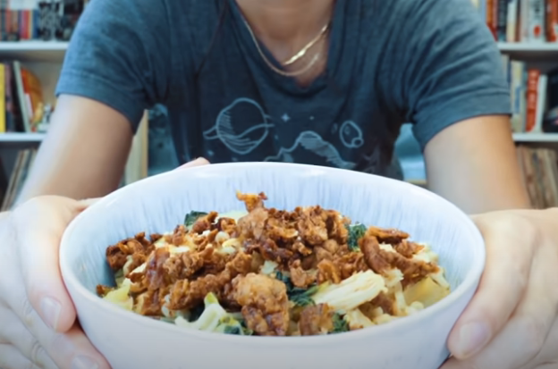

Ramen Noodles With KFC Chicken

Ramen Noodles with bok choy and crispy chicken skin on top
Ingredients:
- 2 pieces bok choy (cut the stems and leaves separately)
- 1 packet of Samyang Hot Chicken Ramen or any spicy instant noodles of your choice
- KFC chicken (quantity to your liking)
- 1 glass of water
- Sriracha (optional)
Steps:
- Remove the chicken skin off the KFC chicken pieces. Toast the chicken at 350-degrees
for 10 minutes. Set aside.
- Peel the chicken meat off the bones. Set aside.
- Heat up a pot over the stove. Add the chicken meat followed by the packet of seasoning
which came with the instant noodles.
- Add water into the pot and mix the ingredients together. Let it boil.
- Add the bok choy stems, followed quickly by the bok choy leaves. Let the mixture cook.
- Top it with the ramen noodles and let everything cook.
- Transfer the dish into a bowl. Chop the crispy chicken skin and sprinkle it over the
noodles before digging in.
- You can add some sriracha or hot sauce to your liking if the noodles are not spicy enough!